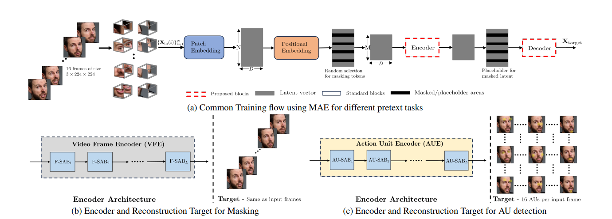
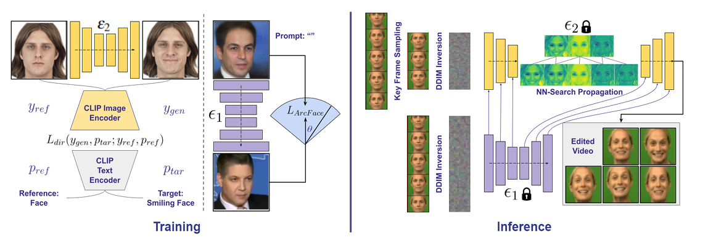
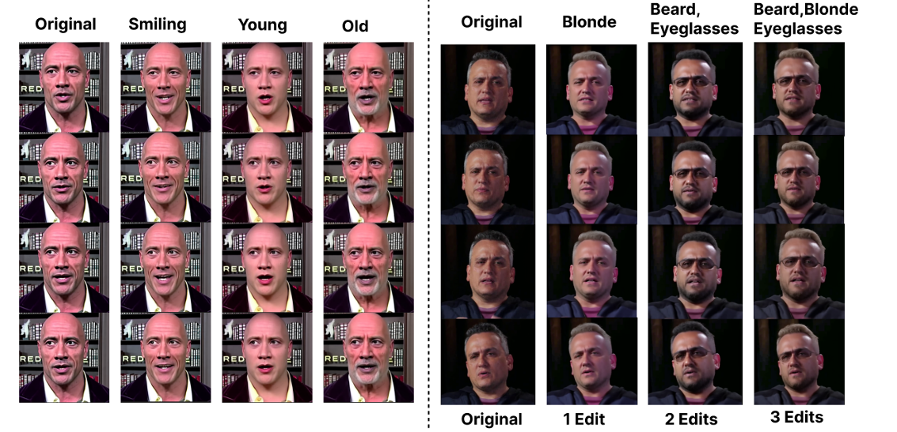
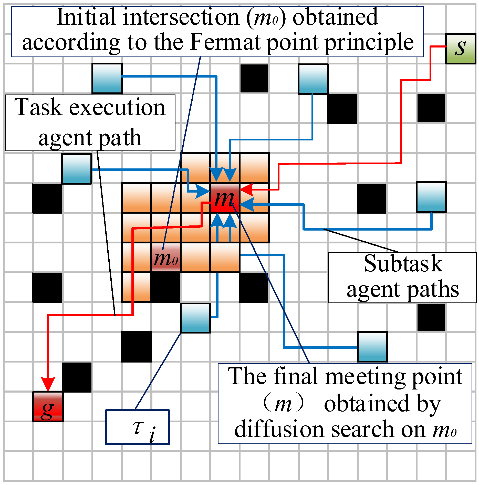

|  |
Detecting Localized Deepfake Manipulations Using Action Unit-Guided Video Representations |
|  |
IP-Face Diff : Identity Preserving Facial Video Editing with Diffusion |
|  |
Fast Facial Video Multi-Editing with Identity Preservation |
|  |
IDF for Patent: A Scalable Low-Latency Lifelong Multi Robot Path Planner |